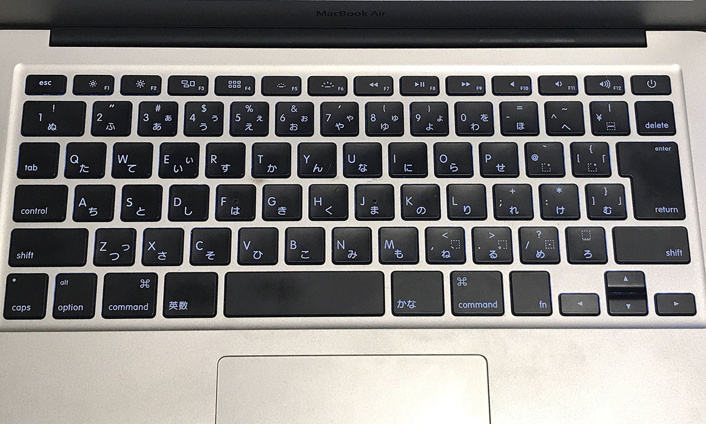

MacBookAir 13インチ Early 2015 と MacBookPro 13インチ Early 2015 の外観を比べてみた
会社で使っている MacBookAir 13インチ Early 2015 を自宅に持って帰っていたので、自分の MacBookPro 13インチ Early 2015 と外観を比べてみた。
どちらも13インチで2015年モデルなので、どんな違いがあるかなぁ～と思っていたら、意外な事実が…。


左が Air・右が Pro。(部屋が汚いので周りを黒く塗り潰しています)
…
… Air の方が大きくね？
白ベゼルが Air で、黒ベゼルになると Pro という区別は自分の中にあったのだけど、まさか Air の方が大きいとは思わなかった。
改めてスペックを並べてみると、以下のとおりだった。
| - | MacBookAir | MacBookPro |
|---|---|---|
| 幅 | 32.5cm | 31.4cm |
| 奥行 | 22.7cm | 21.9cm |
| 高さ | 0.3～1.7cm | 1.8cm |
| 重量 | 1.35kg | 1.58kg |
高さ (厚さ) だけは Air の方が若干薄いが、それでも1ミリ差。幅と奥行きは Air の方が1センチずつ大きくてビックリした。重さはさすがに Air の方が 230g 軽い。

左が Air・右が Pro。
ついでに、Air は JIS (日本語) キーボード、Pro は US (英語) キーボードだったので、キー配列についても比較してみた。

↑コチラが Air・JIS 配列。
↑コチラが Pro・US 配列。
日本語配列の「英数」「かな」あたりのキーって要らないよなぁ…。Fn キーも左側にないと、Fn + Delete キーの操作がしづらい。加えて Mac の日本語配列は CapsLock と Ctrl の位置が気持ち悪いので絶対選ばない。会社でも US キーボードを外付けして使っている。
というワケで、Air は意外と大きかった、というのが今回の発見でした。
ちなみに、11インチの Air も、12インチ MacBook より大きく、重い。
- 参考：MacBook 2017 買ってみました。MacBookAir 11インチと比べて思うこと。 - talblo 良いもの+ひとりごと
- 参考：MacBook 12とMacBook Air 11の外観を詳しく比較してみた | SmCo memory
- 参考：軽いMacならどっち？MacBook12インチ・MacBookAir11インチを徹底比較
- 参考：新型MacBook 12インチとMacBook Airを購入するならどちらがいい？ - Apple製品を購入する前に要チェック！！
コチラは両方とも実機を見たことしかないが、数値で比べてみると以下のとおり。
| - | MacBookAir (11インチ Early 2015) | MacBook (12インチ 2015～2017) |
|---|---|---|
| 幅 | 30cm | 28.05cm |
| 奥行 | 19.2cm | 19.65cm |
| 高さ | 0.3～1.7cm | 0.35～1.31cm |
| 重量 | 1.08kg | 0.92kg |
あぁ… 920g の MacBook ほすぃ…。